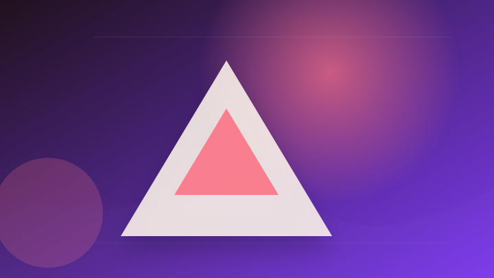
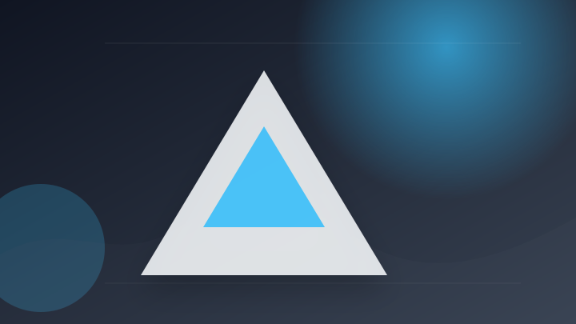
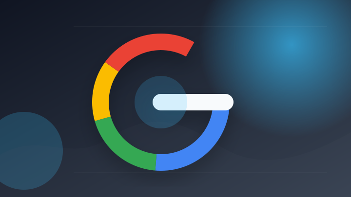
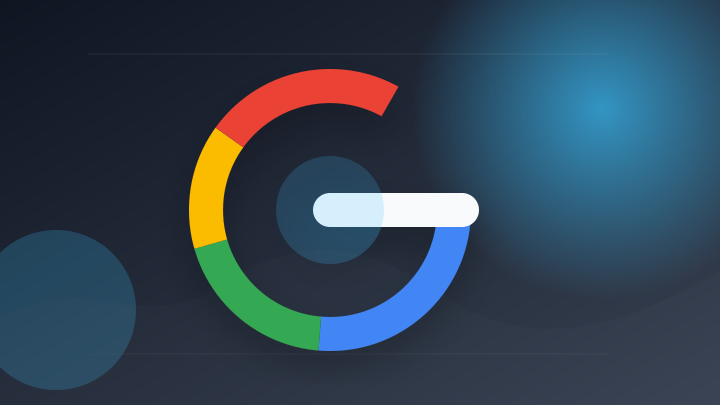
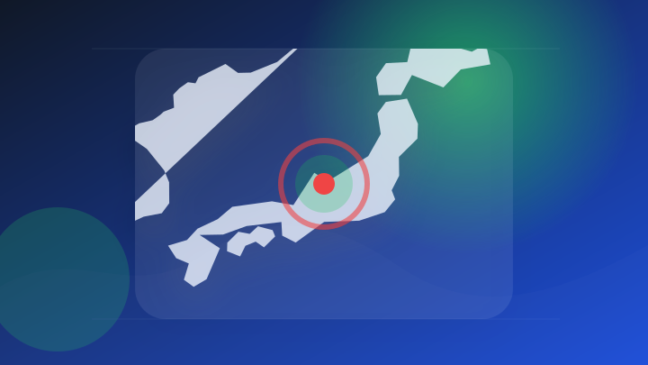
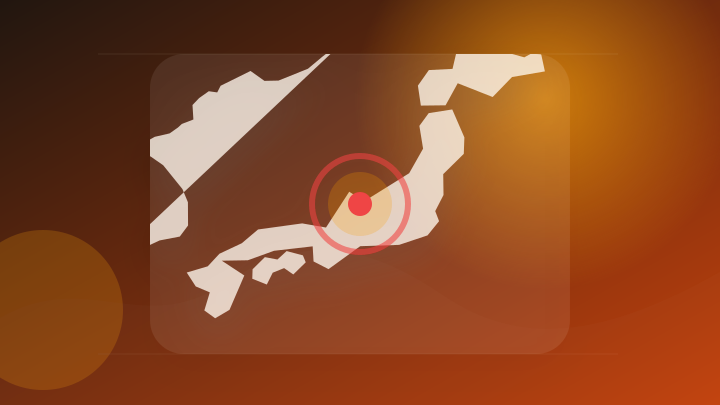
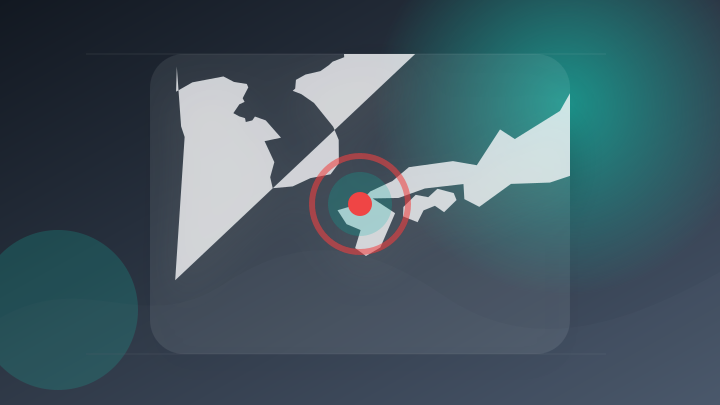
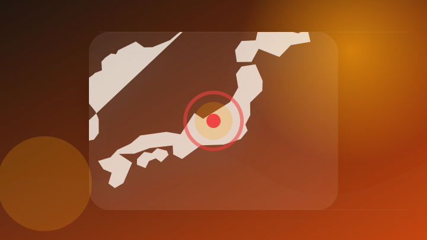
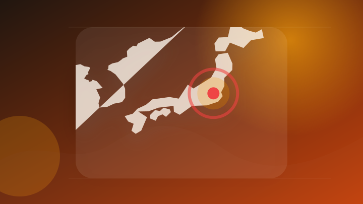

AI
6 topics
AI 配信記事 速報・続報待ち 仕事で使える
コンプライアンスを超えて：AI規制の明確化を待つ企業はすでに遅れを取っている理由
注目ポイント注目度 67点

AI 配信記事 速報・続報待ち 仕事で使える
Anthropicのダリオ・アモデイCEOが「AIの規制」について物申す、規制が中央集権化につながるという指摘に反論
Anthropicのダリオ・アモデイCEOが「AIの規制」について物申す、規制が中央集権化につながるという指摘に反…
注目ポイント注目度 67点

AI 配信記事 速報・続報待ち 仕事で使える
【EC×Claude実践道場】 Claudeで「売れるLP」を自作する 〜外注ゼロ・1日で制作する、CVR×AIO対応のECランディングページ
【EC×Claude実践道場】 Claudeで「売れるLP」を自作する 〜外注ゼロ・1日で制作する、CVR×AIO…
注目ポイント注目度 61点

AI 配信記事 速報・続報待ち 仕事で使える
Anthropic、Claudeの生成テキストに「不可視の透かし」導入へ EU AI法の透明性義務に対応
注目ポイント注目度 61点
AI 配信記事 速報・続報待ち 仕事で使える
GeminiとChatGPTの比較｜生成AIツールの違いと選び方を徹底解説
GeminiとChatGPTの比較
注目ポイント注目度 61点
AI 配信記事 速報・続報待ち 仕事で使える
メディックス、ChatGPT広告の運用支援を開始
注目ポイント注目度 61点
IT業界
5 topics

IT業界 配信記事 速報・続報待ち 動向確認
Googleの折りたたみスマホ「Google Pixel 11 Pro Fold」 前モデル比で約10％軽量化
注目ポイント注目度 61点

IT業界 配信記事 速報・続報待ち 動向確認
Google Pixel 11、Pixel Watch 5、Pixel Tag：Made by Google 2026 の全発表
Google Pixel 11、Pixel Watch 5、Pixel Tag：Made by Google 20…
注目ポイント注目度 61点
IT業界 配信記事 速報・続報待ち 仕事で使える
今日のAIチップ業界 ― フォート・テクノロジー、過去最高の売上高と戦略的買収を背景に事業を拡大
注目ポイント注目度 61点
IT業界 配信記事 速報・続報待ち 動向確認
Mrs. GREEN APPLE、来年の「CEREMONY」開催日が決定（動画あり）
注目ポイント注目度 61点
IT業界 一次情報 公式発表 要注意
第9回サイバーセキュリティ・リレー講座
注目ポイントセキュリティ・AI｜注目度 60点
政治
2 topics
社会
2 topics
事件・事故
6 topics
事件・事故 大手報道 複数社で確認 動向確認
200万円奪われた50代男、詐欺事件の受け子だったとみられ逮捕、直後の強盗事件で中国籍の男3人も緊急逮捕、犯罪収益狙った計画的犯行か 富山
200万円奪われた50代男、詐欺事件の受け子だったとみられ逮捕、直後の強盗事件で中国籍の男3人も緊急逮捕、犯罪収益…
注目ポイント独立2媒体｜注目度 95点

事件・事故 大手報道 報道確認 動向確認
路上で200万円奪われた「被害者」 詐欺の「受け子」容疑で逮捕 [富山県]
注目ポイント注目度 70点
事件・事故 大手報道 報道確認 要注意
地方は交通事故や心臓病、都市部は結核やぜんそくの死亡率高く…東北大など研究チーム「特性応じた医療政策を」
注目ポイント注目度 70点

事件・事故 大手報道 報道確認 動向確認
きのうの富山市の路上強盗事件 中国籍の男３人を逮捕 襲われた男も特殊詐欺事件の容疑者として逮捕 富山県富山市
注目ポイント注目度 70点

事件・事故 大手報道 報道確認 動向確認
自称「筑豊一のノビ師」を逮捕 忍び込んで窃盗容疑、警察が注意喚起 [福岡県]
注目ポイント注目度 70点

事件・事故 大手報道 報道確認 動向確認
犯行時間はわずか6分間…飲食店に侵入し現金や商品券を盗んだ疑いで74歳の男を逮捕 男は一部容疑を否認 余罪を含めて捜査 | SBC NEWS | 長野のニュース | SBC信越放送 (1ページ)
犯行時間はわずか6分間…飲食店に侵入し現金や商品券を盗んだ疑いで74歳の男を逮捕 男は一部容疑を否認 余罪を含めて…
注目ポイント注目度 70点
芸能人の結婚・離婚・交際
1 topics
経済
5 topics

経済 大手報道 報道確認 市場・企業
決算:上場企業の純利益、27年3月期14%増に上振れ シェア上位勢が躍進
注目ポイント注目度 64点
経済 配信記事 速報・続報待ち 市場・企業
NY株、今週は小売決算で消費実態を見極め FOMC議事要旨にも関心
注目ポイント注目度 61点
経済 配信記事 速報・続報待ち 市場・企業
1Qで発掘！｢よい決算｣｢そこそこ決算｣企業を見抜くコツ
注目ポイント注目度 61点
経済 配信記事 速報・続報待ち 市場・企業
決済企業から「起業家の銀行」へ。ブラジルStoneの決算が映す中小企業金融の変化
注目ポイント注目度 61点
経済 配信記事 速報・続報待ち 市場・企業
【業績上方修正と株主還元】2026年12月期 通期業績予想および配当予想の修正（初配）、自己株式の取得・消却を発表
注目ポイント注目度 61点